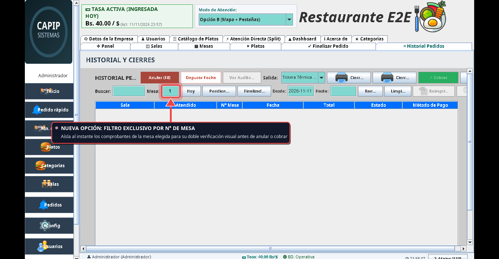
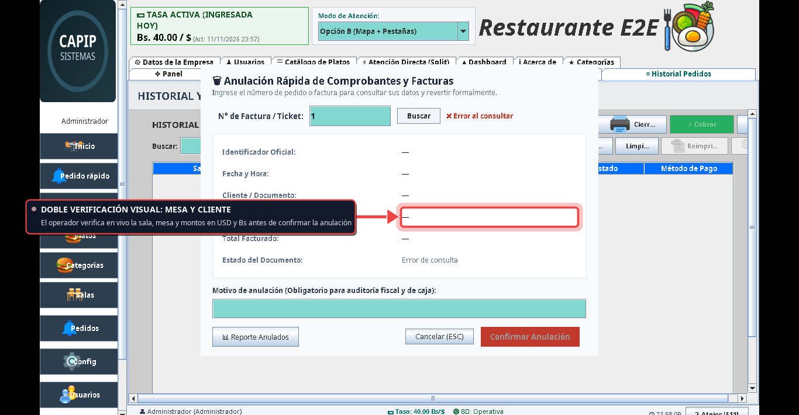
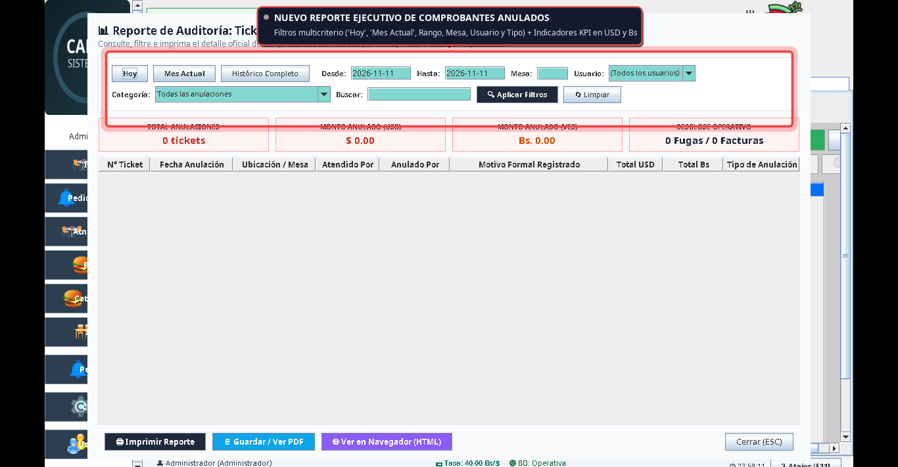
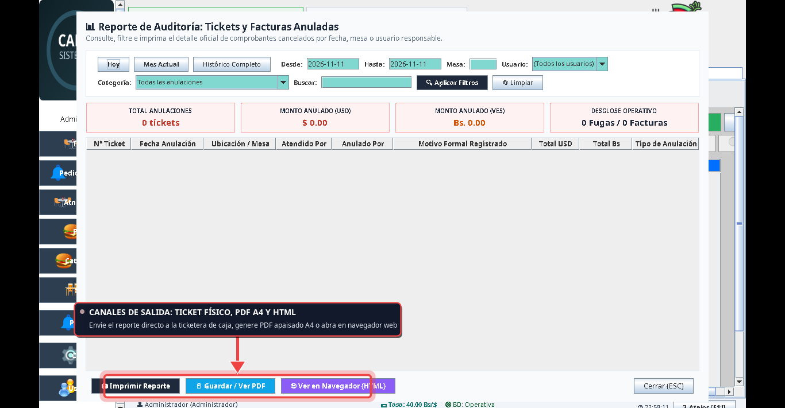

Nuevas Funcionalidades del Sistema
Guía integral con capturas reales anotadas (Xvfb virtual): aclaratoria del identificador de comanda, filtro exclusivo por número de mesa, reporte auditado de tickets anulados y procedimiento formal de rollback de facturas cerradas por equivocación.
🔍 1. Aclaratoria: El Número en Pantalla de Pedidos
Respuesta a la duda del cliente sobre el número que creía que era la "factura" en versiones anteriores.
En versiones preliminares del software, en la pantalla de la cuenta/cobro (pestaña Finalizar Pedido), existía un campo de texto técnico llamado txtIdPedido ubicado junto a los datos de la mesa.
1. Era el ID interno de Base de Datos (pedidos.id): Un auto-incremental puramente técnico (ej. 1, 15, 28) asignado a la comanda al abrirse la mesa.
2. Confusión del operador: Dado que el número aumentaba pedido a pedido, los operadores se acostumbraron a llamarlo informalmente "número de factura", aunque la mesa ni siquiera había sido cobrada.
3. Por qué fue retirado de la vista: Durante la adecuación de blindaje y UX (política ocultarColumnasId), se ocultaron los campos de llave primaria internos (txtIdPedido.setVisible(false)) para evitar manipulaciones erróneas y limpiar la pantalla.
4. Regla fiscal estricta (SENIAT): Una mesa abierta o en consumo es una Pre-cuenta / Comanda. El verdadero Número de Factura Fiscal nace única y exclusivamente en el momento exacto en que se cobra en caja y pasa a estado FINALIZADO.
| Concepto | Identificador de Pedido / Comanda (pedidos.id) |
Número de Factura Fiscal Definitiva |
|---|---|---|
| Momento de creación | Al abrir la mesa y enviar la 1ra ronda a cocina. | Al cobrar en caja y emitir ticket fiscal. |
| Impacto fiscal / contable | Cero impacto (Informativo, modificable). | Venta firme (Correlativo fiscal, Cierre Z, IVA). |
| Dónde lo ubica el operador hoy |
• En el Historial de Pedidos (Columna 1: #000028).• En el Diálogo Asistido F8 (digite el número directamente). • En la Comanda impresa de cocina. |
• En la factura física impresa. • En el PDF oficial emitido. • En los reportes de cierre diario (Corte X y Z). |
#000000XX y en el atajo F8 para cuando necesite buscarlo o anularlo».
🎯 2. Nueva Opción: Filtro Exclusivo por N° de Mesa
Aislamiento instantáneo de comprobantes para doble verificación visual antes de anular o cobrar.
A petición del cliente, se implementó el nuevo campo «Mesa:» directamente en la barra de herramientas del Historial de Pedidos.
- Filtrado Exacto por Columna 3 (Mesa): Al escribir el número (ej.
1,2,5), la tabla oculta todas las demás mesas y muestra únicamente los comprobantes de esa ubicación. - Doble Verificación: El operador puede cotejar en la misma pantalla que la sala, el cliente, la fecha y el total coincidan con la cuenta física en mano antes de proceder.
- Soporte de Pedidos Rápidos: Escriba
0orapidopara ubicar ventas de barra o mostrador sin mesa asignada. - Tooltips Enriquecidos: Pase el ratón por encima del campo para desplegar una guía visual flotante con instrucciones claras de uso.
1. Vaya a la pestaña Historial.
2. Escriba el número de mesa en el campo Mesa.
3. La grilla filtrará en vivo. Use el botón «Limpiar» para restaurar la vista completa.

🗑️ 3. Anulación Asistida (F8) y Formas de Anular
Mecanismos asistidos para liberar mesas colgadas o corregir ventas sin alterar el dinero en caja.
El sistema cuenta con un modal unificado de Anulación Asistida con atajo F8 que protege contra errores de tipeo y asegura trazabilidad fiscal inmutable:
- Búsqueda en Vivo: Digite el número de comprobante (ej.
1o#00000001). - Tarjeta de Doble Verificación: El sistema carga automáticamente en vivo:
• Ubicación (Sala y N° de Mesa).
• Cliente y RIF/Cédula.
• Fecha/Hora de emisión.
• Total facturado en USD y Bs.
• Estado actual (PENDIENTE o FINALIZADO). - Motivo Formal Obligatorio: Exigido para el libro de auditoría fiscal (no permite confirmar en blanco).
- Cero impacto en caja para cuentas pendientes: Si era una fuga de comensal, libera la mesa sin alterar el dinero físico de caja ni el Cierre Z.

Otras 3 Vías Rápidas de Anulación Integradas:
Botón «Depurar Fecha»
Ubicado en Historial. Si al abrir el local en la mañana quedan mesas en rojo del turno anterior, anula en un solo clic todas las cuentas colgadas de esa fecha y libera el salón.
Menú Contextual (Clic Derecho)
Haga clic derecho sobre cualquier fila en la tabla del Historial de Pedidos y seleccione «🗑️ Anular Comprobante / Factura (F8)» para abrir el modal pre-cargado.
Botón «No Pagó (Fuga)» en Caja
En la propia pantalla de cobro de cuenta (Caja), si el cliente se retiró sin pagar, use el botón rojo directo para cancelar sin generar movimiento de dinero.
📊 4. Reporte Ejecutivo de Comprobantes Anulados
Auditoría completa con filtros multicriterio, tarjetas KPI y salidas en Impresora, PDF y HTML.
Para dar cumplimiento a los requerimientos de auditoría y control interno, se diseñó una pantalla ejecutiva especializada ([DialogoReporteAnulados]) accesible desde el Historial y desde el modal F8:
- Filtros Rápidos: Botones «Hoy» y «Mes Actual» para consultas inmediatas con un solo clic.
- Filtro por Rango: Selección precisa de fechas «Desde» y «Hasta».
- Filtro por N° de Mesa: Permite auditar qué mesas han tenido incidentes o fugas recurrentes.
- Filtro por Usuario: Lista desplegable con cajeros y mesoneros involucrados.
- Categorización de Anulación: Segmenta entre Cuentas Pendientes (Fugas) y Facturas Cobradas Revertidas.
- Tarjetas KPI en Tiempo Real: Indicadores de impacto económico en dólares ($) y bolívares (Bs.).


Opciones de Emisión y Salida del Reporte:
Envía el documento al spooler de la impresora de tickets configurada en el sistema, listo para archivar con los cierres de caja.
Genera un informe apaisado (A4 Landscape) de alta resolución con logotipo, membrete fiscal de la empresa, filtros aplicados, tarjetas KPI y firmas de auditoría.
Abre el reporte en Google Chrome / navegador predeterminado con estilos CSS responsivos y soporte nativo de impresión limpia (@media print).
🔄 5. Procedimiento y Mejores Prácticas: Rollback de Facturas
Protocolo ante el caso en que se cerró y cobró una mesa por equivocación mientras los comensales siguen consumiendo.
Un error humano frecuente en restaurantes ocurre cuando un cajero o mesonero cobra y cierra la Mesa 4 creyendo que los comensales ya se iban (o confundiéndola con la Mesa 5), pero los clientes siguen sentados y piden postres, cafés o la cuenta real.
En la normativa tributaria venezolana (SENIAT) y en los estándares internacionales de POS (Point of Sale), toda factura finalizada que generó correlativo fiscal y registro de dinero es inmutable. Borrar o alterar silenciosamente el estado de una factura constituye una infracción fiscal de evasión y descuadra irreversiblemente el Cierre Z y la caja chica.
Las 3 Reglas de Oro para un Rollback Confiable:
Ventana de Tiempo
El mismo día / mismo turno contable (Pre-Z):
El rollback debe ejecutarse el mismo día antes de emitir el Cierre Total Z. Una vez emitido el Cierre Z, los libros fiscales quedan sellados y cualquier corrección posterior requerirá una Nota de Crédito contable formal.
Validación de Mesa
Verificar que la mesa física esté LIBRE:
Antes de restaurar la comanda a la mesa original, debe verificarse que no haya sido ocupada por un nuevo grupo de clientes. Si ya fue ocupada, el pedido debe restaurarse en otra mesa libre o abrirse como Pedido Rápido.
Contra-Asiento en Caja
Neutralizar el dinero cobrado:
El sistema genera automáticamente un contra-asiento de egreso/devolución formal en pedido_saldos_movimientos para revertir los cobros registrados (efectivo, punto de venta o transferencia) y mantener cuadrada la caja física.
Flujo Operativo Paso a Paso (Cómo hacerlo en el Sistema):
Anulación Fiscal de la Factura
1. Presione F8 o ubique la factura en el Historial.
2. Verifique que sala, mesa y montos coincidan.
3. Ingrese el motivo obligatorio: "Cierre accidental de mesa por error de digitación".
4. Confirme la anulación. El sistema genera el contra-asiento de egreso en caja chica y neutraliza la venta fiscal.
Reapertura de la Mesa
1. Vaya a Atención Directa / Mesas.
2. Compruebe que la mesa esté en verde (Libre).
3. Haga clic en la mesa y seleccione el mesonero correspondiente.
4. Se reactiva la cuenta en estado PENDIENTE y la mesa vuelve a ponerse en color ROJO (Ocupada).
Adición de Consumo y Cobro Final
1. Agregue los platos ya servidos (marcando comanda sin reimprimir en cocina si ya salieron de la cocina).
2. Los clientes continúan consumiendo normalmente.
3. Al terminar la estadía, proceda al cobro formal de la cuenta real definitiva con su factura fiscal correcta.
Al seguir este procedimiento, el arqueo de caja chica al final del día coincide al 100% con los billetes físicos y vouchers de tarjetas de crédito, la auditoría registra la trazabilidad del operador con hora exacta, y la mesa queda liberada únicamente cuando los clientes verdaderamente se retiran.
📋 6. Checklist Rápido para el Operador
Reglas prácticas que debe recordar todo cajero y administrador del turno.
- Al iniciar el turno en la mañana: Revise si hay mesas rojas del turno anterior. Si son colgadas, use «Depurar Fecha» en el Historial para liberarlas en bloque.
- Antes de anular cualquier ticket: Utilice el campo «Mesa:» en el Historial o el atajo F8 para hacer la doble verificación visual de sala, mesa y monto.
- Si un comensal huyó o no pagó: Use «No Pagó (Fuga)» en Caja o anule en F8 indicando el motivo. Cero impacto en caja.
- Para auditorías o inspecciones: Abra el «Reporte Anulados», filtre por «Hoy» o «Mes Actual», y exporte en PDF oficial o imprima directo en ticketera.
- Atajos de Teclado Clave:
F8(Anulación Asistida),F4(Menú de Favoritos),F11/Shift+F1(Panel interactivo de atajos).